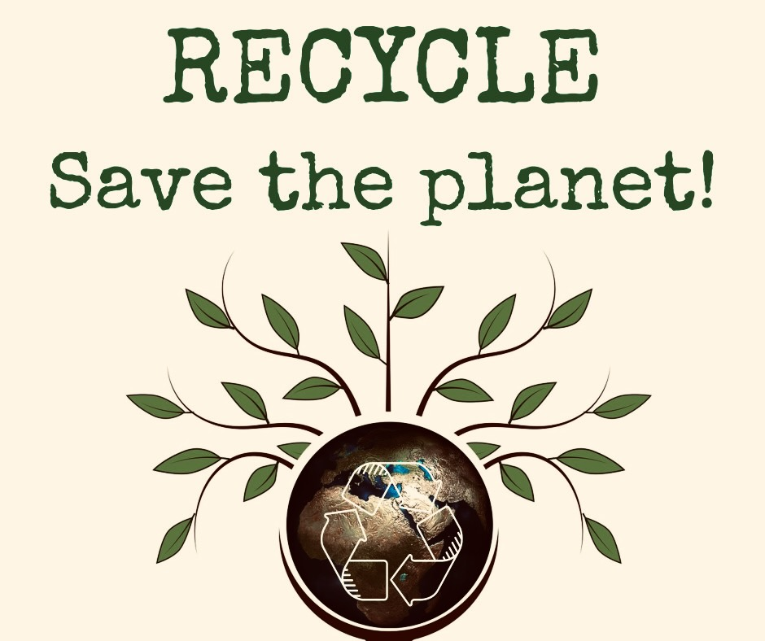
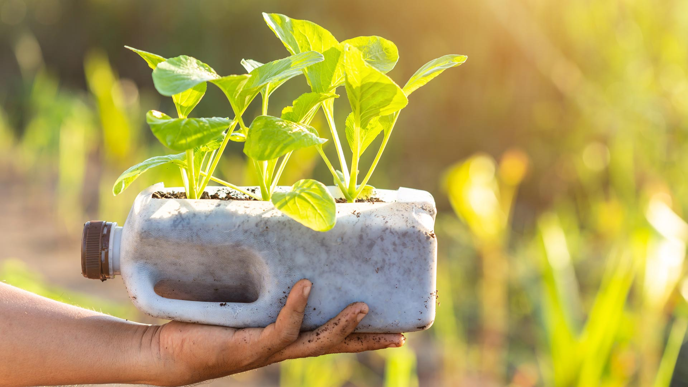
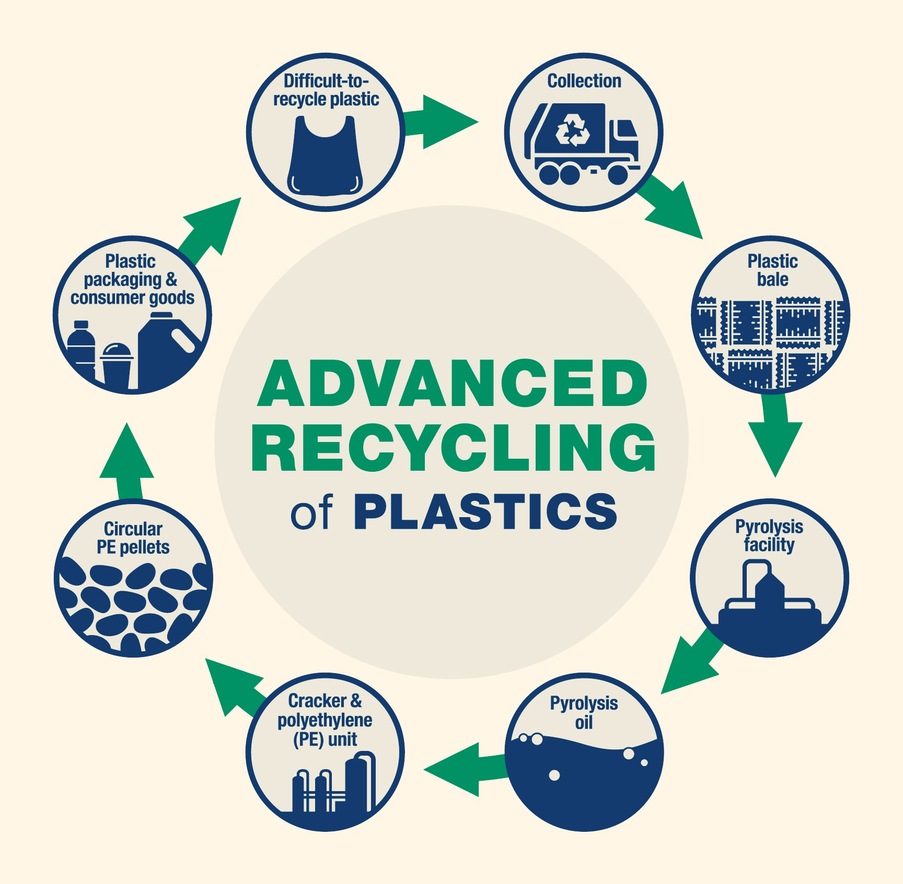

Recycling Do Work!
♥Recycle
Recycling is a vital practice that has numerous positive impacts on the environment.
By processing and transforming materials into new products, recycling reduces the need for raw materials and offers several key benefits such as
environmental conservation,waste reduction,energy saving ,economic benefits , and conservation of Habitat and Biodiversity .
Recycling is an effective and practical solution to address environmental challenges and promote sustainability.
Recycling conserves resources, reduces waste, saves energy, creates economic opportunities, and protects habitats and biodiversity.
Through the recycling of materials such as paper, plastic, glass, and metals, we can significantly decrease
the volume of waste directed to landfills.
Recycling plays a critical role in waste management by diverting materials away from landfills minimizing the impact on ecosystems and reducing the necessity for new landfill sites.
The recycling process itself typically consumes less energy compared to producing new materials from raw resources,
resulting in reduced carbon emissions and a smaller carbon footprint.
By embracing recycling practices, we actively participate in the creation of a circular economy, where materials are reused, remanufactured, and
repurposed, leading to greater sustainability and the minimization of waste.
Plastic Recycling!
♥Reuse
Plastic in our modern society is widely used in a wide range of products and packaging.
However, the excessive use of plastic has generated growing concern about its negative effects on the environment.
Faced with this problem, the reuse and recycling of plastic have become essential practices to mitigate environmental impact and promote sustainability.
The reuse of plastic involves extending the useful life of plastic products, thus avoiding their premature disposal.
By choosing to reuse plastic containers, such as water bottles or shopping bags, we reduce the need to manufacture new products and decrease the amount of plastic waste generated.
In addition, reuse fosters the circular economy by promoting a continuous cycle of use and reuse of existing materials.
In conclusion, the reuse and recycling of plastic help curb plastic pollution and promote environmental sustainability.
These practices will allow us to reduce waste generation, conserve natural resources, reduce pollution and move towards a circular economy.
By adopting the reuse and recycling of plastic as part of our lifestyle, we actively contribute to protecting the environment and building a more sustainable future for future generations.